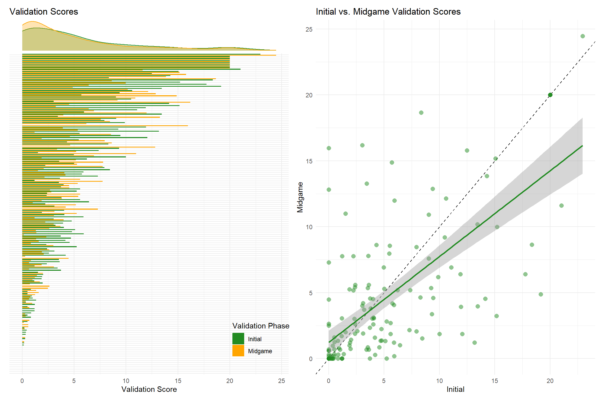
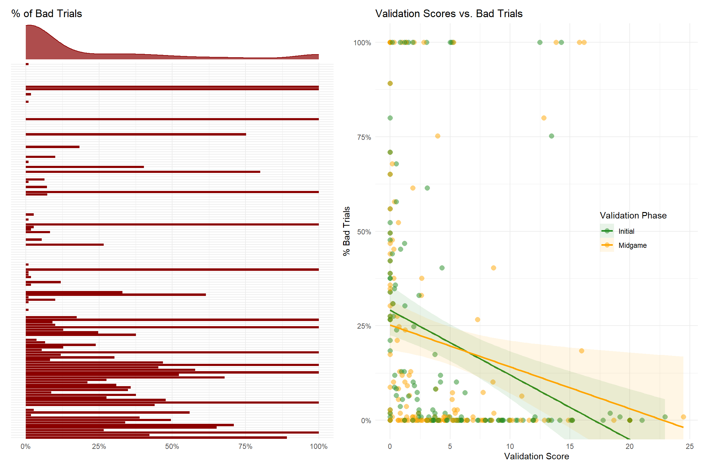
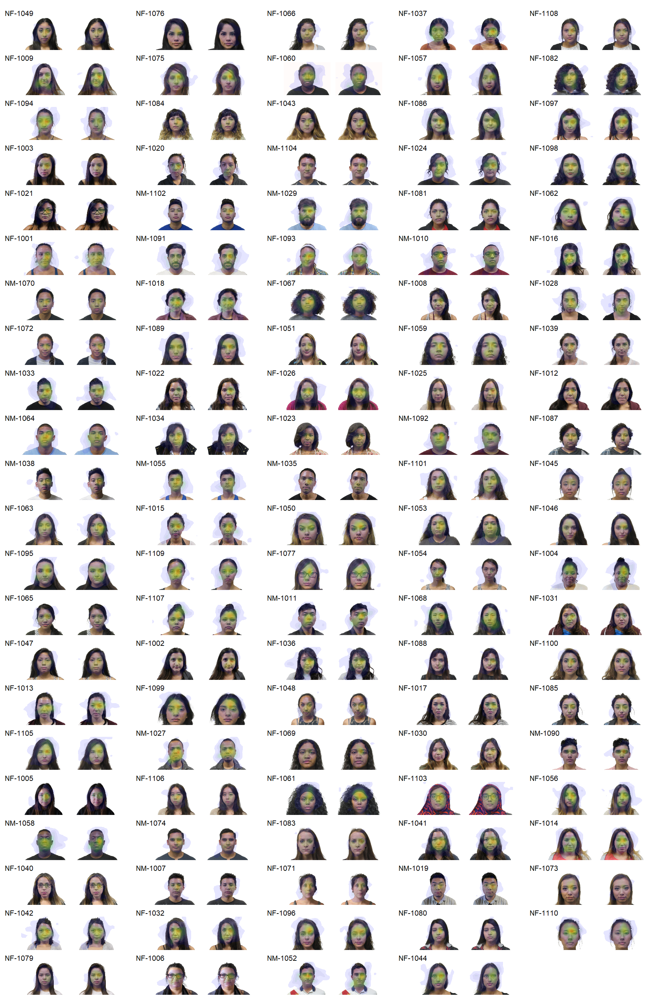
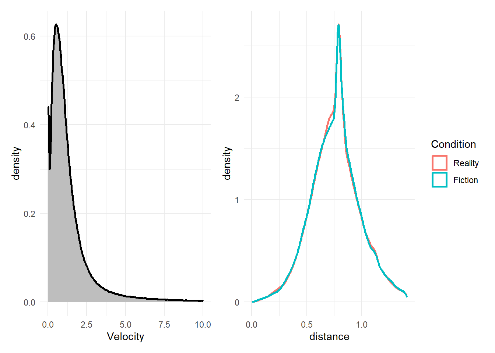
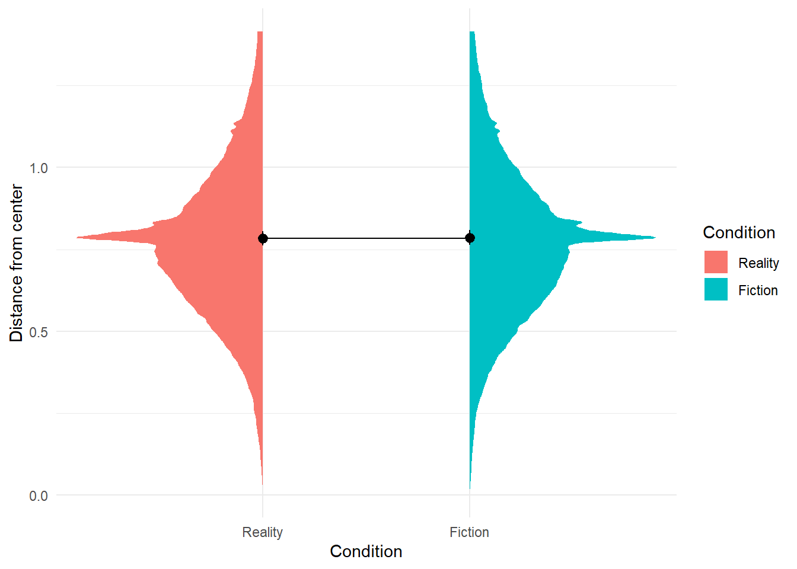
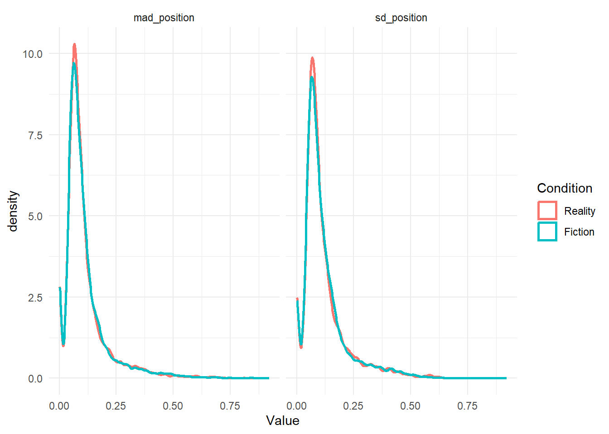

Code
library(tidyverse)
library(easystats)
library(patchwork)
library(magick)
library(ggside)library(tidyverse)
library(easystats)
library(patchwork)
library(magick)
library(ggside)dfori <- read.csv("../data/rawdata_eyetracking.csv") |>
full_join(select(read.csv("../data/rawdata_task.csv"), Participant, Stimulus, Condition),
by = join_by(Participant, Stimulus)) |>
mutate(
# Participant = fct_relevel(Participant, rev(levels(dfval$Participant))),
Condition = fct_relevel(Condition, c("Reality", "Fiction")),
# Rescale Gaze_x as a percentage where 0 is the left corner and 1 is the right corner of the image
x = (Gaze_x - Target_TopLeft_x) / (Target_BottomRight_x - Target_TopLeft_x),
y = (Gaze_y - Target_TopLeft_y) / (Target_BottomRight_y - Target_TopLeft_y),
# Distance from center (0, 0)
distance = sqrt(x^2 + y^2)
) |>
filter(Time > 0) |>
mutate(
# d_time = c(NA, ifelse(diff(Time) < 0, NA, diff(Time))),
Velocity = c(NA, sqrt(diff(x)^2 + diff(y)^2)) / c(NA, ifelse(diff(Time) < 0, NA, diff(Time))),
Velocity = ifelse(!is.finite(Velocity), NA, Velocity)
)dfval <- read.csv("../data/rawdata_participants.csv") |>
select(Participant, starts_with("Eyetracking_")) |>
pivot_longer(-Participant, names_to="Index", values_to="Value") |>
filter(!is.na(Value)) |>
filter(str_detect(Index, "_Mean")) |>
mutate(Participant = fct_reorder(Participant, Value)) |>
mutate(Index = str_remove(Index, "Eyetracking_Validation"),
Index = str_remove(Index, "_Mean"),
Index = ifelse(Index == "1", "Initial", "Midgame"))
p_val1 <- dfval |>
ggplot(aes(x=Value, y=Participant)) +
geom_bar(stat="identity", aes(fill=Index), position = position_dodge2(reverse=TRUE)) +
theme_minimal() +
labs(title="Validation Scores", fill="Validation Phase", color="Validation Phase", x="Validation Score", y=NULL) +
theme(legend.position = "inside", legend.position.inside = c(0.9, 0.1)) +
ggside::geom_xsidedensity(aes(fill=Index, color=Index), alpha=0.3) +
ggside::theme_ggside_void() +
scale_fill_manual(values=c("forestgreen", "orange")) +
scale_color_manual(values=c("forestgreen", "orange"))
p_val2 <- dfval |>
pivot_wider(names_from="Index", values_from="Value") |>
ggplot(aes(x=Initial, y=Midgame)) +
geom_abline(intercept=0, slope=1, linetype="dashed") +
geom_point2(size=3, alpha=0.5, color="forestgreen") +
geom_smooth(method="lm", formula = 'y ~ x', color="forestgreen") +
theme_minimal() +
labs(title="Initial vs. Midgame Validation Scores")
p_val1 | p_val2
p_fix <- dfori |>
filter(Type == "Fixation Cross") |>
mutate(
Participant = fct_relevel(Participant, rev(levels(dfval$Participant))),
x = Gaze_x / (Target_TopLeft_x * 2),
y = Gaze_y / (Target_TopLeft_y * 2)
) |>
ggplot(aes(x=x, y=y)) +
geom_path(aes(group=interaction(Participant, Stimulus), color=Participant, linewidth=Time),
alpha=0.7, linewidth=0.2) +
geom_hline(yintercept = 0.5, linetype="dashed", color="black") +
geom_vline(xintercept = 0.5, linetype="dashed", color="black") +
geom_rect(xmin=0, ymin=0, xmax=1, ymax=1, alpha=0, color="black") +
see::scale_color_material_d(guide="none") +
scale_linewidth_continuous(range=c(1, 0.1), guide="none") +
scale_x_continuous(labels=scales::percent) +
scale_y_continuous(labels=scales::percent) +
coord_cartesian(xlim=c(-0.3, 1.3), ylim=c(-0.3, 1.3)) +
theme_minimal() +
facet_wrap(~Participant, scales="free") +
labs(title="Fixation Cross Pattern", x=NULL, y=NULL)
p_fixinvalid <- dfori |>
filter(Type != "Fixation_Cross") |>
summarize(xout = mean(is.na(x) | (!is.finite(x)) | (x < 0) | (x > 1)),
yout = mean(is.na(y) | (!is.finite(y)) | (y < 0) | (y > 1)),
.by=c("Participant", "Stimulus")) |>
mutate(Bad = case_when(
is.na(xout) | is.na(yout) ~ TRUE,
xout > 0.9 | yout > 0.9 ~ TRUE,
.default = FALSE
))
dfsub_bad <- invalid |>
summarize(Bad = sum(Bad) / n(),
.by=c("Participant"))
p_bad1 <- dfsub_bad |>
mutate(
# Participant = fct_reorder(Participant, Bad)
Participant = fct_relevel(Participant, levels(dfval$Participant))
) |>
ggplot(aes(y=Participant, x=Bad)) +
geom_bar(stat="identity", fill="darkred") +
scale_x_continuous(labels=scales::percent) +
theme_minimal() +
theme(legend.position="none") +
labs(x=NULL, y=NULL, title="% of Bad Trials") +
ggside::geom_xsidedensity(fill="darkred", color="darkred", alpha=0.7) +
ggside::theme_ggside_void()
p_bad2 <- merge(dfsub_bad, dfval, by="Participant") |>
ggplot(aes(x=Value, y=Bad)) +
geom_point2(aes(color=Index), size=3, alpha=0.5) +
geom_smooth(aes(color=Index, fill=Index), method="lm", formula = 'y ~ x', alpha=0.1) +
coord_cartesian(ylim=c(0, 1)) +
scale_y_continuous(labels=scales::percent) +
scale_color_manual(values=c("forestgreen", "orange")) +
scale_fill_manual(values=c("forestgreen", "orange")) +
theme_minimal() +
theme(legend.position = "inside", legend.position.inside = c(0.8, 0.5)) +
labs(color = "Validation Phase", fill = "Validation Phase", y = "% Bad Trials", title="Validation Scores vs. Bad Trials", x="Validation Score")
p_bad1 | p_bad2
((p_val1 | p_bad1 + theme(axis.text.y = element_blank())) /
(p_val2 | p_bad2)) | p_fix
df <- dfori |>
filter(Type != "Fixation Cross") |>
full_join(select(invalid, Participant, Stimulus, Bad), by=join_by(Participant, Stimulus)) |>
filter(Bad == FALSE) |>
select(-Bad) |>
filter(is.finite(x), is.finite(y))We removed insight::format_percent((nrow(filter(dfori, Type != "Fixation Cross")) - nrow(df)) / nrow(filter(dfori, Type != "Fixation Cross"))) “bad” trials.
plot_eyetrace <- function(stim="NF-1041") {
img <- magick::image_read(paste0("../experiment/stimuli/AMFD/", stim, ".jpg")) |>
magick::image_resize("400x")
dat <- df |>
filter(Type == "Image") |>
filter(Stimulus == stim) |>
mutate(
x = datawizard::rescale(x, range=c(0, 1), to=c(0, magick::image_info(img)$width)),
y = datawizard::rescale(y, range=c(0, 1), to=c(0, magick::image_info(img)$height))
)
img |>
magick::image_ggplot() +
stat_density_2d(
data=dat,
aes(x=x, y=y, fill = after_stat(level)),
geom = "polygon", alpha=0.1) +
geom_path(
data=dat,
aes(x=x, y=y, group = Participant, color=Condition),
alpha=0.3, linewidth=0.2) +
scale_color_manual(values=c("Reality"="red", "Fiction"="blue")) +
scale_fill_gradientn(colors=c("blue", "green", "yellow", "orange", "red")) +
labs(title=stim) +
theme_void() +
theme(legend.position="none",
strip.text = element_blank(),
plot.title = element_text(size = 8)) +
facet_grid(~Condition)
}
plots <- list()
for (stim in unique(df$Stimulus)) {
plots[[stim]] <- plot_eyetrace(stim)
}
patchwork::wrap_plots(plots, ncol=5)
# Clean disengaging gazes
dat <- df |>
filter(!is.na(Velocity)) |>
filter(Velocity < 10)
p1 <- dat |>
ggplot(aes(x=Velocity)) +
geom_density(fill="grey", linewidth=1) +
theme_minimal()
# Remove outside of image fixations (max distance = sqrt(2))
dat <- dat |>
filter(is.finite(distance)) |>
filter(distance < sqrt(2))
p2 <- dat |>
ggplot(aes(x=distance, color=Condition)) +
geom_density(linewidth=1) +
theme_minimal()
p1 | p2
m <- glmmTMB::glmmTMB(y ~ Condition + (Condition|Participant) + (Condition|Stimulus),
data=dat)
insight::display(parameters::parameters(m))| Parameter | Coefficient | SE | 95% CI | z | p |
|---|---|---|---|---|---|
| (Intercept) | 0.48 | 0.02 | (0.43, 0.52) | 20.23 | < .001 |
| Condition [Fiction] | -1.67e-03 | 9.48e-03 | (-0.02, 0.02) | -0.18 | 0.860 |
| Parameter | Coefficient |
|---|---|
| SD (Intercept: Participant) | 0.17 |
| SD (Intercept: Stimulus) | 0.05 |
| SD (ConditionFiction: Participant) | 0.05 |
| SD (ConditionFiction: Stimulus) | 0.06 |
| Cor (Intercept~ConditionFiction: Participant) | 0.11 |
| Cor (Intercept~ConditionFiction: Stimulus) | -0.68 |
| SD (Residual) | 0.25 |
m <- glmmTMB::glmmTMB(distance ~ Condition + (Condition|Participant) + (Condition|Stimulus),
data=dat)
insight::display(parameters::parameters(m))| Parameter | Coefficient | SE | 95% CI | z | p |
|---|---|---|---|---|---|
| (Intercept) | 0.79 | 0.02 | (0.75, 0.83) | 40.75 | < .001 |
| Condition [Fiction] | 6.74e-04 | 6.52e-03 | (-0.01, 0.01) | 0.10 | 0.918 |
| Parameter | Coefficient |
|---|---|
| SD (Intercept: Participant) | 0.14 |
| SD (Intercept: Stimulus) | 0.03 |
| SD (ConditionFiction: Participant) | 0.03 |
| SD (ConditionFiction: Stimulus) | 0.04 |
| Cor (Intercept~ConditionFiction: Participant) | 4.77e-03 |
| Cor (Intercept~ConditionFiction: Stimulus) | -0.64 |
| SD (Residual) | 0.19 |
estimate_means(m, by="Condition") |>
ggplot(aes(x=Condition)) +
ggdist::stat_slab(data=filter(dat, Condition=="Reality"), aes(y=distance, fill=Condition), side="left") +
ggdist::stat_slab(data=filter(dat, Condition=="Fiction"), aes(y=distance, fill=Condition), side="right") +
geom_line(aes(y=Mean, group=1)) +
geom_pointrange(aes(y=Mean, ymin=CI_low, ymax=CI_high)) +
theme_minimal() +
labs(y="Distance from center", x="Condition")
# Exploratory gaze
dat <- df |>
filter(is.finite(distance)) |>
filter(distance < sqrt(2)) |>
summarize(
sd_position = (sd(x, na.rm=TRUE) + sd(y, na.rm=TRUE)) / 2,
mad_position = (mad(x, na.rm=TRUE) + mad(y, na.rm=TRUE)) / 2,
.by=c("Participant", "Condition", "Stimulus")
)
dat |>
pivot_longer(cols=c(sd_position, mad_position), names_to="Metric", values_to="Value") |>
ggplot(aes(x=Value, color=Condition)) +
geom_density(linewidth=1) +
facet_wrap(~Metric) +
theme_minimal()Warning: Removed 6 rows containing non-finite outside the scale range
(`stat_density()`).
m <- glmmTMB::glmmTMB(sd_position ~ Condition + (Condition|Participant) + (Condition|Stimulus),
data=dat)Warning in (function (start, objective, gradient = NULL, hessian = NULL, :
NA/NaN function evaluation
Warning in (function (start, objective, gradient = NULL, hessian = NULL, :
NA/NaN function evaluation
Warning in (function (start, objective, gradient = NULL, hessian = NULL, :
NA/NaN function evaluation
Warning in (function (start, objective, gradient = NULL, hessian = NULL, :
NA/NaN function evaluationWarning in finalizeTMB(TMBStruc, obj, fit, h, data.tmb.old): Model convergence
problem; non-positive-definite Hessian matrix. See vignette('troubleshooting')Warning in finalizeTMB(TMBStruc, obj, fit, h, data.tmb.old): Model convergence
problem; singular convergence (7). See vignette('troubleshooting'),
help('diagnose')insight::display(parameters::parameters(m))| Parameter | Coefficient |
|---|---|
| (Intercept) | 0.16 |
| Condition [Fiction] | 6.40e-04 |
| Parameter | Coefficient |
|---|---|
| SD (Intercept: Participant) | 0.10 |
| SD (Intercept: Stimulus) | 6.07e-03 |
| SD (ConditionFiction: Participant) | 5.50e-56 |
| SD (ConditionFiction: Stimulus) | 4.31e-03 |
| Cor (Intercept~ConditionFiction: Participant) | -0.99 |
| Cor (Intercept~ConditionFiction: Stimulus) | -1.00 |
| SD (Residual) | 0.06 |
m <- glmmTMB::glmmTMB(mad_position ~ Condition + (Condition|Participant) + (Condition|Stimulus),
data=dat)Warning in finalizeTMB(TMBStruc, obj, fit, h, data.tmb.old): Model convergence
problem; non-positive-definite Hessian matrix. See vignette('troubleshooting')Warning in finalizeTMB(TMBStruc, obj, fit, h, data.tmb.old): Model convergence
problem; singular convergence (7). See vignette('troubleshooting'),
help('diagnose')insight::display(parameters::parameters(m))| Parameter | Coefficient | SE | 95% CI | z | p |
|---|---|---|---|---|---|
| (Intercept) | 0.15 | 0.01 | (0.13, 0.18) | 10.61 | < .001 |
| Condition [Fiction] | 5.15e-04 | 2.37e-03 | (-4.13e-03, 5.16e-03) | 0.22 | 0.828 |
| Parameter | Coefficient |
|---|---|
| SD (Intercept: Participant) | 0.10 |
| SD (Intercept: Stimulus) | 7.25e-03 |
| SD (ConditionFiction: Participant) | 1.25e-03 |
| SD (ConditionFiction: Stimulus) | 7.23e-03 |
| Cor (Intercept~ConditionFiction: Participant) | 1.00 |
| Cor (Intercept~ConditionFiction: Stimulus) | -1.00 |
| SD (Residual) | 0.07 |